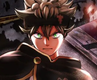

Latest Releases
TV SHOW
Tokyo Revengers
Takemichi Hanagaki is a that's reached the absolute pits of despair in his life. He finds out that the only girlfriend he ever had in his life that he dated in middle...
MANGA
Sun-Ken Rock
Ken left Japan, pursuing the woman he loves to Korea. However, while she became a policewoman, Ken somehow wound up in a gang, even becoming their boss! The...

TV SHOW
Black Clover
In a world where magic is everything, Asta and Yuno are both found abandoned at a church on the same day. While Yuno is gifted with exceptional magical powers, Asta is...